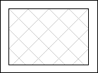

Monkfish, salmon and mushrooms in puff pastry boxes
Servings: 4
Time: 1½ hours
- 500g puff pastry
- 100g bacon, chopped up small
- 1 small onion or shallot, finely chopped
- 250g mushrooms, quartered
- juice of ½ lemon
- 250g monkfish, cubed
- 250g salmon, cubed
- 125 ml dry white wine
- 250 ml fish stock
- 1 tsp tomato purée
- 125 ml double cream
- 1 tbsp finely chopped chervil
- Roll out the pastry ¼ inch thick. Cut into four rectangles and place on parchment paper on a baking sheet.

Mark the rectangles with a sharp knife as shown here, the black lines being deep cuts and the grey ones shallow. The inner rectangle will become the lid of the box, and the shallow diagonal cuts will give a quilted effect.
- Bake the pastry boxes for about 15 minutes at 220°C, until they are a pleasant golden colour and well risen. Remove them when they're done, separate the lids from the boxes and put them back in the turned-off oven to keep warm. This bit can be done well ahead.
- Cook the bacon in a large frying pan until the fat runs. Tip off the fat, add the onion and some butter and cook until it's nice and soft. Add the mushrooms, salt, pepper and some of the lemon juice, cover and sweat for a further 5 mins or so. Remove the lid and cook hard to evaporate the juices.
- Season the fish pieces with salt, pepper and lemon juice and add them to the mushroom and bacon mixture. Toss over a moderate heat for about 5 minutes, until cooked and opaque. Remove the fish.
- Add the wine and fish stock to the pan and reduce by half. Whisk in the tomato purée and cream and reduce again by half. Stir in the fish and mushrooms, and the chopped herbs.
- To serve, spoon it into the pastry boxes and put the lid on top.
This is a variation of "Puff Pastry Poissons with Monkfish and Mushrooms" from Sue Style's Good Housekeeping Creative Cookery. It's a good one to do if you want to impress people with your culinary mastery. As it's quite a complicated thing to do, you could do the pastry and bacon/mushroom bit in advance, add the stock and reduce it, and simply fry the fish at the last minute and add it to the sauce.
|